Januar 2026 - Bremen
2026 "KALENDER"
Der Boom Boom "Kalender" geht in die zweite Runde! Geskribbelt haben wir im Freundeskreis, das Layout und den Druck hab ich im Januar erst geschafft. In den letzten Wochen ist hier in der Kanzlei jedenfalls der Penplotter von Fifikus & Shermanski heißgelaufen. Wer gern einen hätte, einfach bescheidsagen, oder fürs nächste Jahr anmelden :3
Sonst gibts hier eine PDF zum selber drucken.
{kind=link}
{kind=link}
{kind=link}
November 2025 - Bremen
BLICKFANG
Im Projekt BLICKFANG des QUARTIER Bremen gGmbH habe ich zusammen mit der supertollen Klasse 8f der Wilhelm-Kaisen-Oberschule ein Plakat gestaltet. An vier Projekttagen haben wir uns gemeinsam dem Thema Werbung genähert. Zuerst haben wir in einer Rallye durch die Bremer Innenstadt Gestaltung und Marketingstrategien von Läden und großen Unternehmen beleuchtet. Danach entstanden in einer kreativen Schreibwerkstatt - nach dem Prinzip Kühlschrankpoesie - Slogans, Symbole und Emojis, die die Themen der Jugendlichen auf den Punkt bringen.
Insgesamt sind noch 20 weitere Plakate an anderen Schulen, Freizis und Kitas in Bremen entstanden. Kürzlich fanden die feierlichen Ausstellungseröffnungen an Litfaßsäulen in den jeweiligen Stadtteilen statt. Unser Plakat hängt nun vom 13. bis 23.02.26 an der Litfaßsäule Osterstraße x Buntentorsteinweg in der Bremer Neustadt. Alle Plakate werden dann noch einmal gemeinsam vom 06.03. – 03.05.2026 in den Schaufenstern des ehemaligen Kaufhof-Gebäudes in der Innenstadt zu sehen sein. Eröffnung ist am Freitag, 06. März um 14 Uhr.
Vielen Dank an Louisa May, Nadine Scheffler und Steffen Bockhorst von QUARTIER für die gute Projektleitung und auch an die zwei Klassenlehrerinnen an der Schule. Das Projekt hat großen Spaß gemacht mit euch!
Gruppenfoto: Yuliya Herbst & Emoji Mashup
{kind=link}
{kind=link}
{kind=link}
{kind=link}
April 2025 - Osterode am Harz
Grafik Workshop mit JOHA
JOHA, die Jugendbeteiligung in meiner Heimatstadt Osterode am Harz plant neben dem alljährlichen Kinderferienpass auch ein Ferienprogramm für junge Erwachsene. Diese Initiative finde ich sehr cool und unterstützenswert. Um das Ferienprogramm zu bewerben und die Arbeit an dieser Stelle etwas in Gang zu bringen, habe ich mit ihnen einen mini Grafik-Workshop gemacht. Wir haben der Reihe nach Übungen zum Gestalten mit Schrift und Bild, Text und Layout gemacht. Heraus kam ein Kalender Dummy, den wir leider nicht ausreichend dokumentiert haben. Hier ein paar Ergebnisse der Übungen:
1. Schreiben mit Heißkleber! Noice!
2. Eine Illustration aus Knete und Alufolie
3. Buchstaben auseinanderschneiden und neu zusammensetzen
4. Alle zusammen beim Schreiben!
{kind=link}
{kind=link}
{kind=link}
{kind=link}
März 2025 - Osterode am Harz
Ferienpass Cover
Seit mehr als zehn Jahren mache ich die Cover Gestaltung des Kinderferienpasses in Osterode. Tada, die diesjährige Variante. Die Idee kam mir/ uns in Paris, als wir einen unwirklich vollen Spielplatz beobachtet haben. Ein einziges Gewusel. Geschrei von allen Seiten. Der pure Spaß. Gezeichnet hab ich dann im Café des Palais de Tokyo - wo zu der Zeit auch noch eine Ausstellung zum Thema Spielen gezeigt wurde. Ein tolles Museum, kann ich jedermaus nur empfehlen!
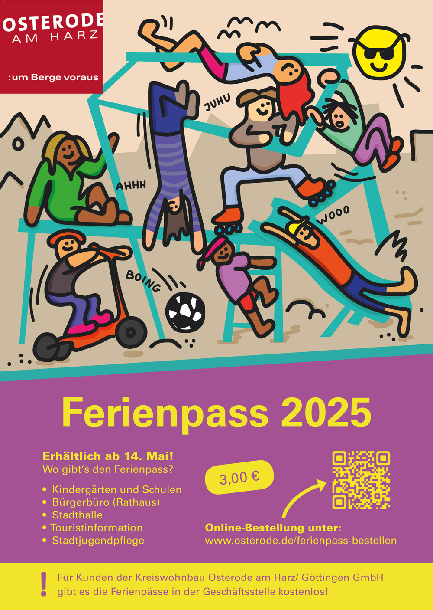{kind=link}
Juni 2024 - Boden, Österreich
Dolcefarniente - ein Handbuch
Zwei Wochen lang waren Bianca und ich auf dem Medienfrische Festival in Boden, Österreich. Wir haben dort im Rahmen einer Residency zum Thema Helfen, Geholfen werden und Danken gearbeitet. Dabei ist ein kleines Zine entstanden, in dem wir unsere Erfahrungen und den Austausch mit all den anderen tollen Künstler*innen übers Helfen in kleinen Selbstversuchen aufbereitet haben. Zum Release gabs Sekt mit selbstgemachtem Holunderblütensirup, mjam mjam. Handbuch als PDF downloaden?!
Foto: Vitaly Yankovi
{kind=link}
{kind=link}
{kind=link}
April 2023 - Karlsruhe
FLOHMARKT Flyer #2
Und schwups, ist ein Jahr vergangen. Hier der Flyer aus dem Jahr 2023 für den Gartenstadt Flohmarkt. Dr. Rad war jedoch leider nicht im Lande...
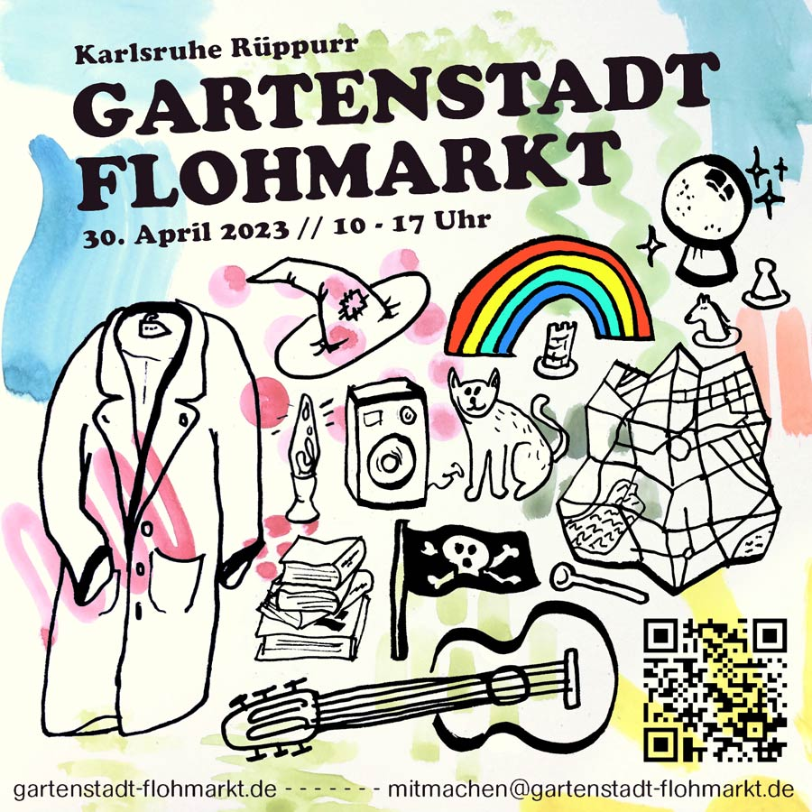{kind=link}
April 2022 - Karlsruhe
FLOHMARKT Flyer
Ein Freund von mir hat Ende April einen Flohmarkt in der Karlsruher Gartenstadt organisiert, von mir kam der Flyer. Dazu gabs Pizza und Drinks und Dr. Rad war auch da - ich hoffe auf ein nächstes Mal!
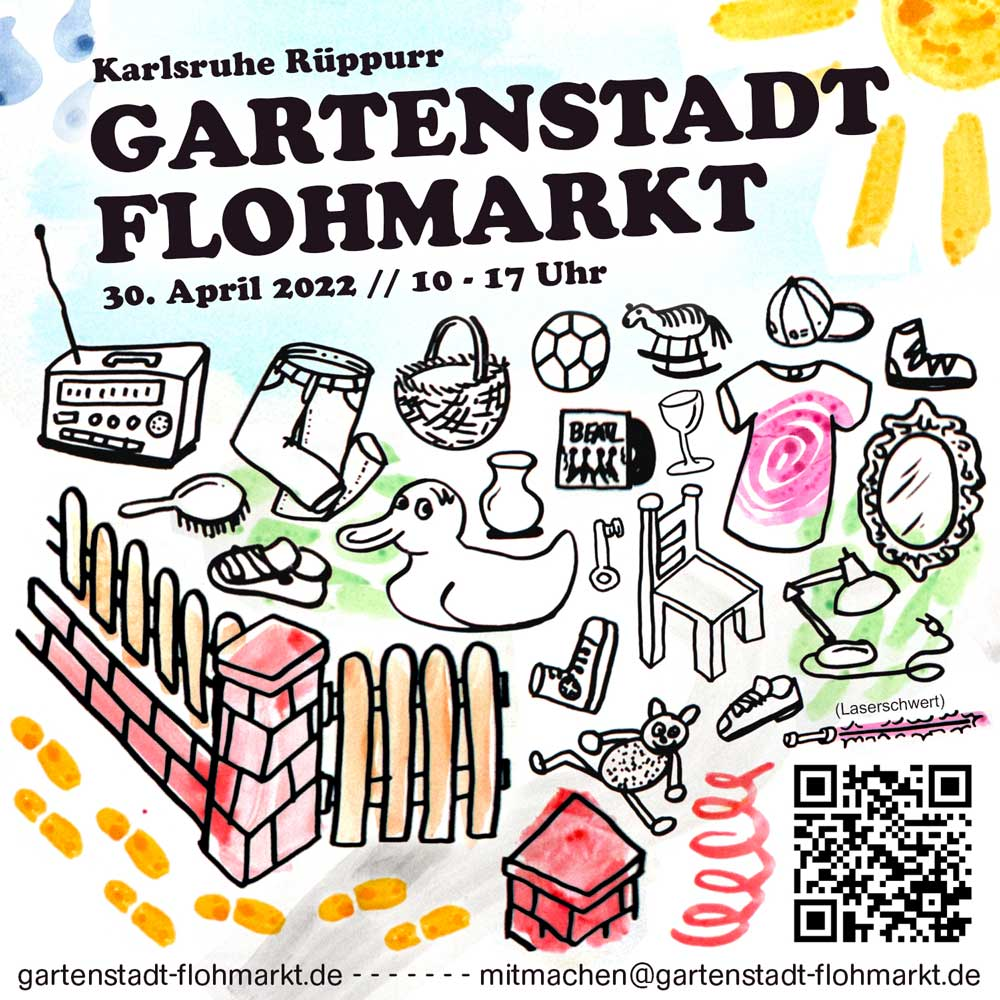 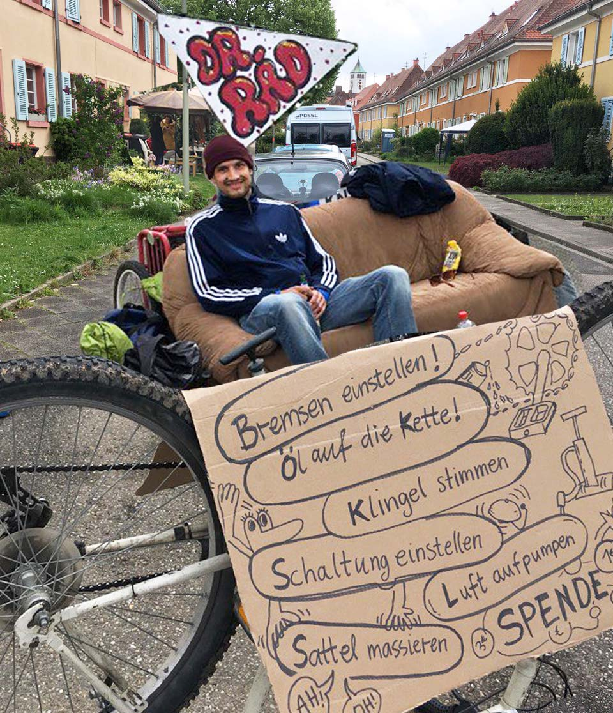{kind=link}
{kind=link}
April 2022 - Bremen x Karlsruhe
FAKE EXPERIENCE Shirts und Flyer
Für das Album Release meiner Band Fake Experience gabs einen lustigen Flyer und eigens siebgedruckte Shirts. Übrigens, Shirts sind noch verfügbar, die selbstgebrannten CDs im Pizzakarton-Case sind leider aus.
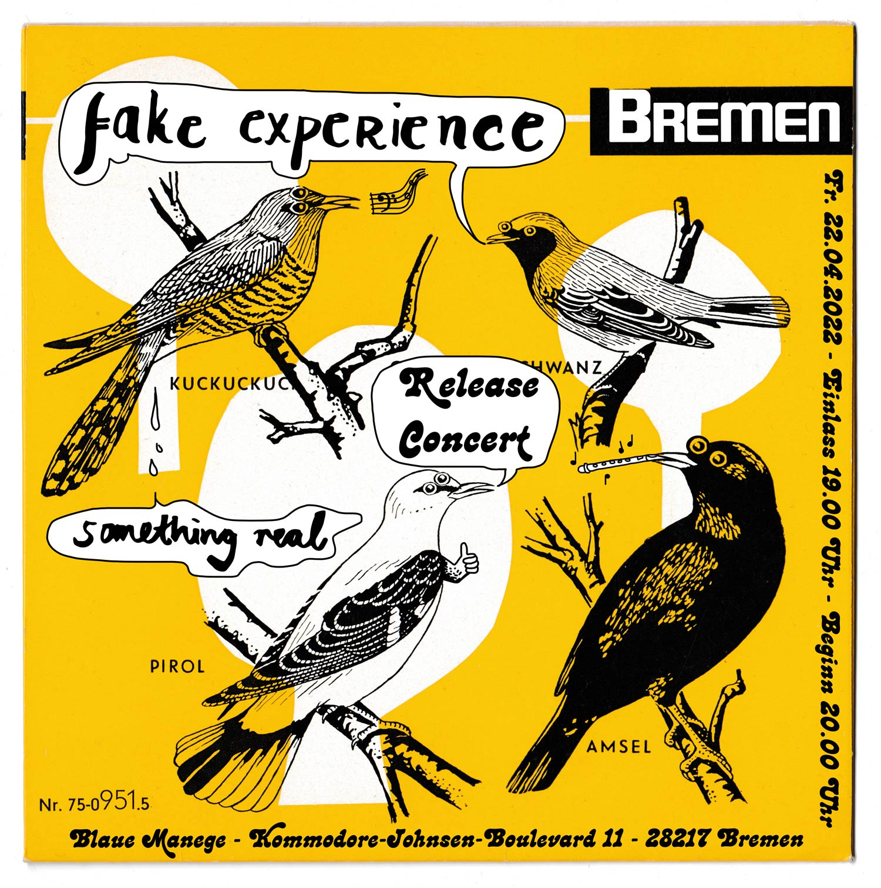 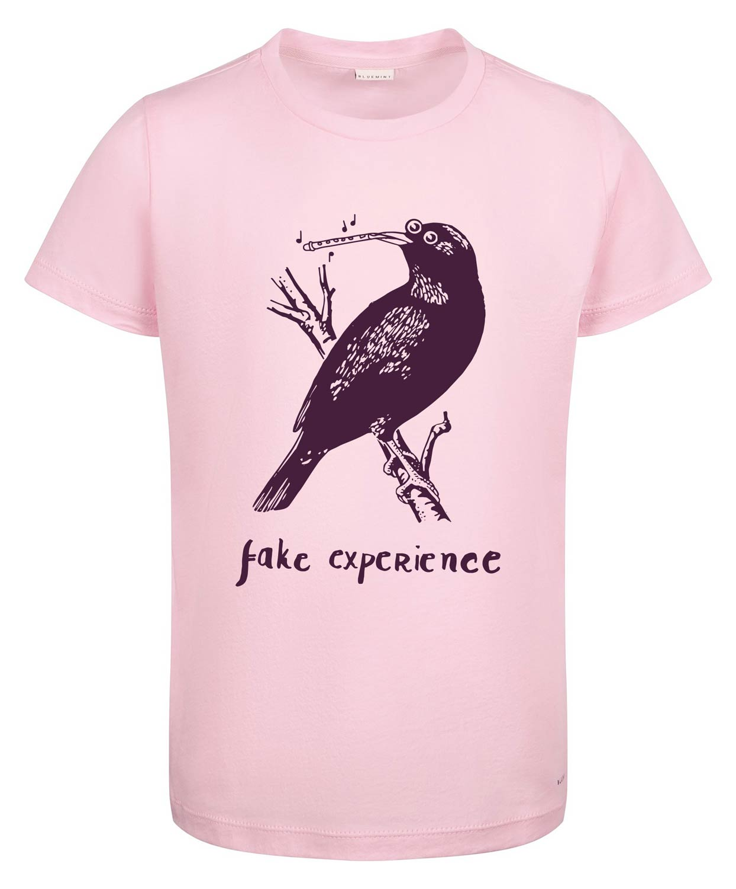{kind=link}
{kind=link}
November 2021 - Karlsruhe
BUBBLEPARK
Das Projekt Bubblepark des WERKRAUM: Karlsruhe e.V. habe ich als Medienpädagoge und Webdesigner begleitet. Aus der Beschäftigung mit dem Thema Filterblasen entstand ein Stationentheater im Citypark Karlsruhe, bei dem das Publikum mithilfe einer fake Social-Media Platform über das eigene Handy in zwei Gruppen geteilt, verschieden informiert und so gegeneinander "radikalisiert" wurde.
Fotos: Bernd Hentschel
{kind=link}
 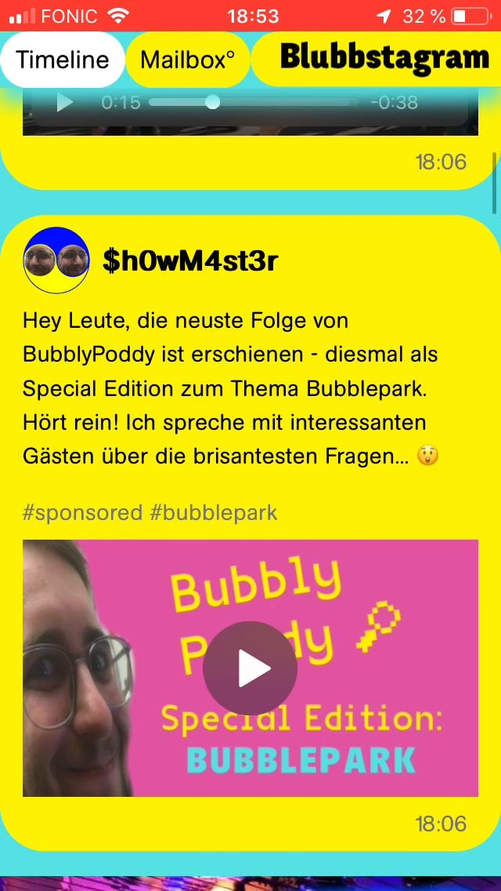
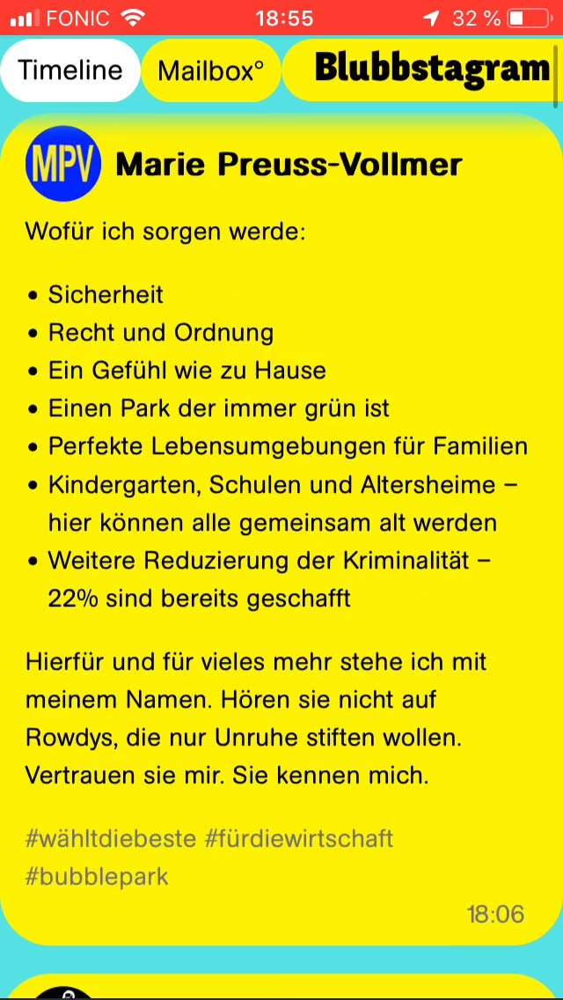
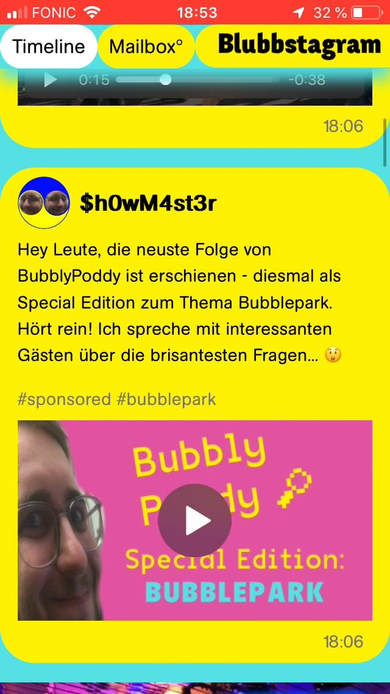
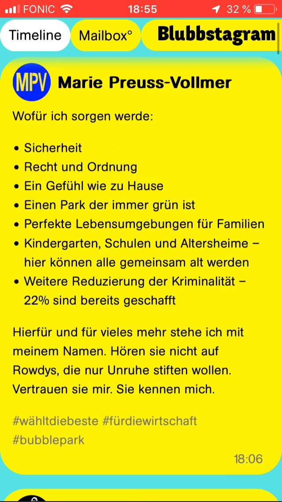
{kind=link}
{kind=link}
Juni 2021 - Karlsruhe
ARTENSCHUTZTAG Flyer
Den Tuschkasten aus der Grundschule wieder rauskramen und Mitbewohner zum Malen animieren: So kam dieser Flyer für den Artenschutztag am KIT Karlsruhe zustande. Naja, so oder so ähnlich...
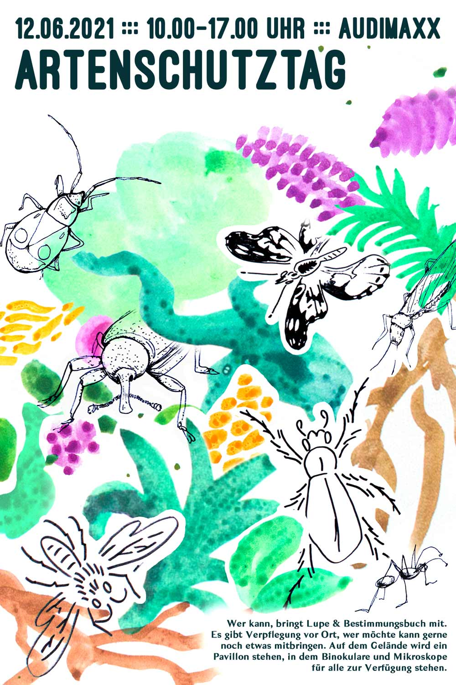{kind=link}
Dezember 2019 - Bremen
Verschiedene Siebdrucke
In Vorbereitung auf die Weihnachtszeit hab ich mit Alex B ein paar Tage in der Siebdruckwerkstatt verbracht. Dabei ist der "endlose Pups" zu Papier gekommen.
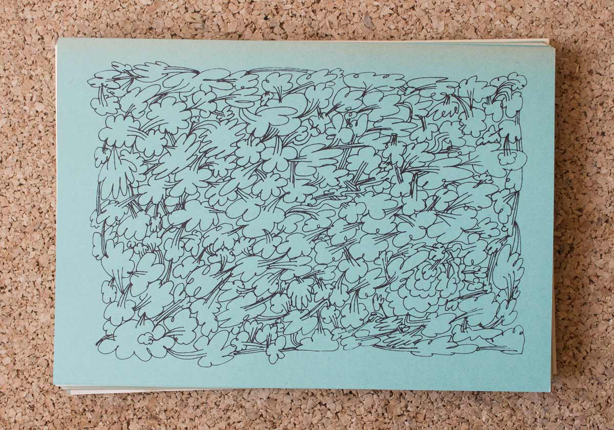{kind=link}
Noch aus meiner Yogastudio-Zeit hatte ich diesen schönen Sketch im Büchlein. Die Vorlage ist vorbereitet, aber zum Drucken bin ich noch nicht gekommen. Hier mal das Motiv - Fotos von den Shirts kommen später. *fingerscrossed*

Mai 2019 - Bremen
Icon Set für den Bauhof
Im Rahmen der grafischen Umgestaltung des Jugendzentrums Bauhof in Wunstorf sollte ich ein Set an Illustrationen entwerfen. Insgesamt sind dabei etwa 70 kleine Icons entstanden, die nun flexibel und spielerisch bei Ankündigungen, auf Hinweiszetteln, online etc. ihre Verwendung finden.
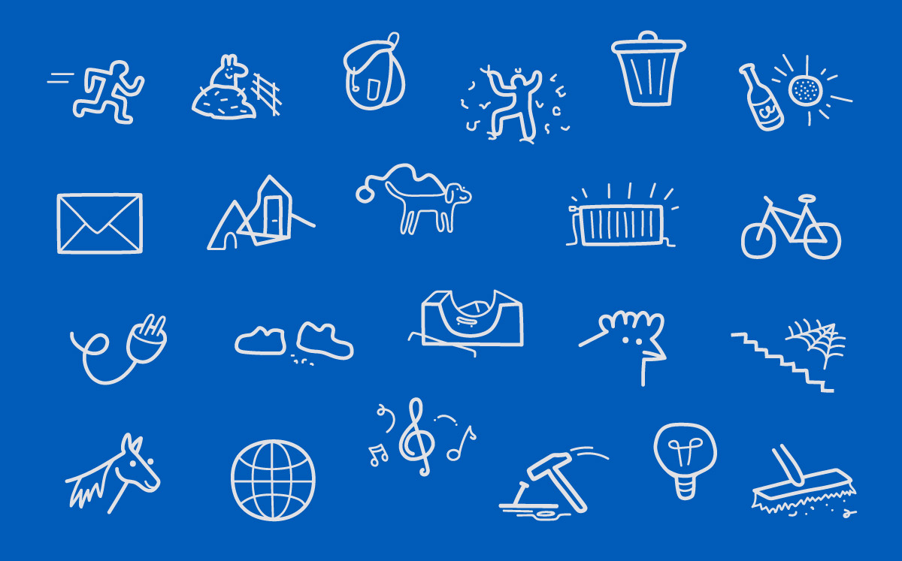 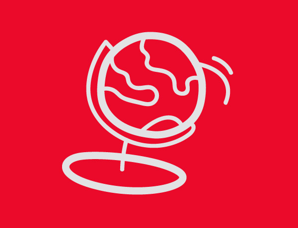 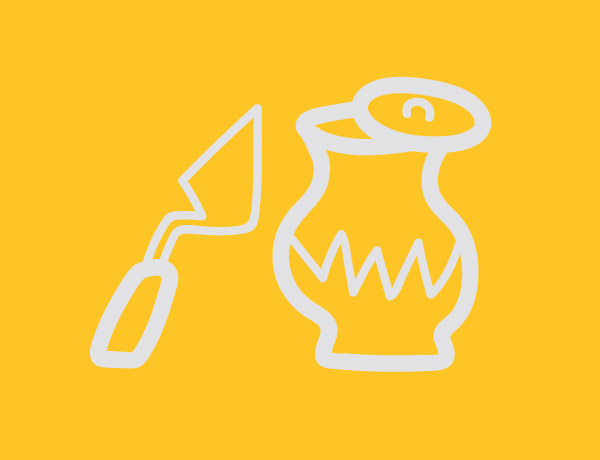{kind=link}
{kind=link}
{kind=link}
Dezember 2018 - Bremen
Gesichtergesichertgesich
Hier hab ich mir mal ein wenig mehr Zeit genommen und ein für meine Verhältnisse relativ großes Blatt gefüllt. Und zwar mit Gesichtern. Click it and get lost in the whole thing...
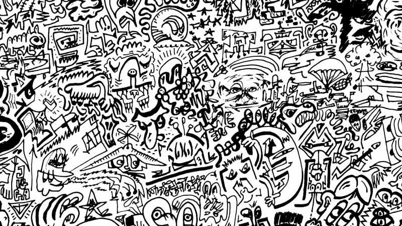Juni 2017 - Bremen x Leipzig
Pullover mit ACID Stitch
Mein Freund QNETE betreibt mit seiner Freundin das Modelabel Can't Decide in Leipzig. Seit kurzem sind sie im Besitz einer professionellen Stickmaschine und zaubern damit neben Auftragsarbeiten ihre Genre-Pullis - das ACID Design durfte ich übernehmen. Erhältlich im Shop des Robert Johnson, online oder in Frankfurt.
Foto: Can't Decide
Model: Paul


2013 — 2018 - Osterode am Harz
Ferienpass Illustrationen für Osterode
Für meine Heimatstadt Osterode gestalte ich seit 2013 die Cover-Illustrationen des alljährlichen Ferienpasses, in dem schulferienüberbrückende Aktionen angeboten werden. Die Ausgaben 2016 bis 2018 sind im Bild unten zu sehen.

2016 - Bremen
Ehrenamtlich bei TECHO
Aus meiner Zeit, die ich mit den Jungs und Mädels von TECHO Deutschland gearbeitet habe, trage ich einige schöne Erinnerungen und Bekanntschaften davon. Wer TECHO nicht kennt: "Un techo para mi país" (dt. „Ein Dach für mein Land“), in Chile gegründete NGO und Hilfsorganisation, in Krisen- und Katastrophengebieten tätig, dessen europäische Ableger gegen die Missstände - mittlerweile - in der ganzen dritten Welt Spenden sammeln. Ein persönlicher Meilenstein ist zum Beispiel das schöne Team-Shirt. Die Illustration erinnert mich heute noch immer wieder an die Atmosphäre während meines Sommereinsatzes mit TECHO in Panguipulli, Chile.


Ende 2015 haben wir in einer 6er-Gruppe eine Weihnachtskampagne hochgezogen die Events, Postkarten und die Website einer sich wöchentlich entfaltenden Haiti-Erdbeben-Geschichte, sowie Spendenaufrufe, Facebook-Posts und letztendlich eine Publikation vom Kampagnenergebnis beinhaltete. Auch hier waren Layouts und Grafiken gefragt, die ich gut und gerne zeige.